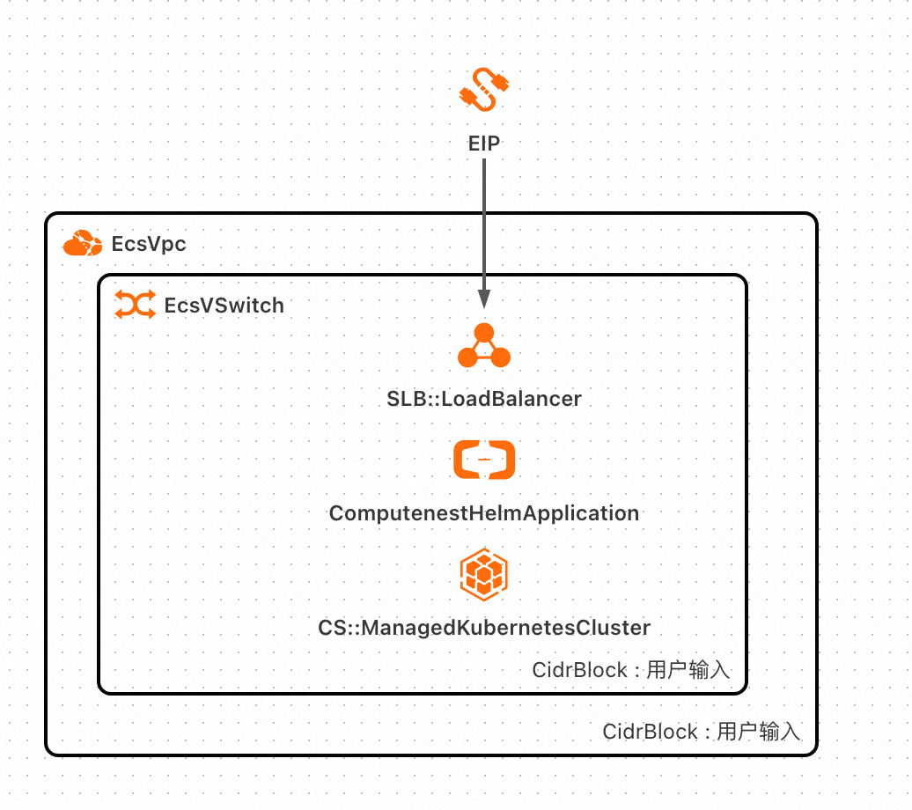
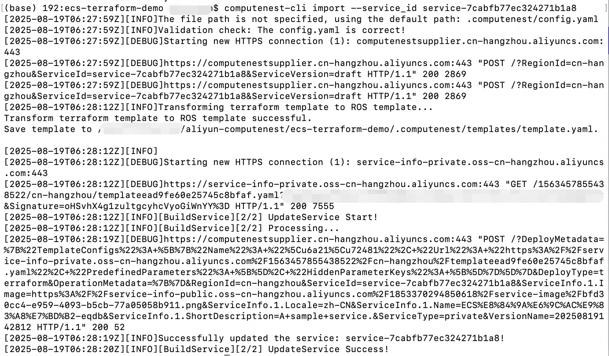

服务模板说明文档
说明
本项目以使用Helm Chart部署SpringBoot为例，介绍快速构建计算巢服务的流程。 本示例对应的Git仓库地址：helm-terraform-demo。
部署架构

使用说明
通过此精选模板，可以快速创建一个支持Terraform部署方式的服务。如果您想部署自己的软件，或者修改服务，有两种方式：
方式一：直接通过计算巢控制台编辑服务
- 到计算巢"我的服务"中，找到创建成功的服务，点击编辑版本
- 可以在模板区域查看模板并修改（建议将Terraform模板复制到编辑器中后编辑完再复制回控制台）。
- 除此之外还可以在控制台设置一些服务的功能，例如套餐功能、服务运维功能等。
- 编辑完成后点击保存更新即可。
方式二：仓库拉取到本地并采用计算巢命令行工具进行服务更新
- 拉取仓库到本地：点击刚创建的服务查看详情，可以看到代码源和分支，直接点击代码源查看该仓库
 拉取仓库到本地
拉取仓库到本地
 以该仓库为例，拉取命令：
以该仓库为例，拉取命令：
git clone https://github.com/aliyun-computenest/helm-terraform-demo.git - 下载computenest-cli命令行工具，执行一下命令，确保当前的环境python>=3.7
pip install computenest-cli - 修改仓库内容：
##### 目录说明 .computenest: 计算巢根目录 - docs：相关文档说明 - templates: 模板相关配置 - infrastructure: 基础设施相关配置 - main.tf: 资源定义，即需要的云资源 - output.tf: 输出定义，即服务部署完成后的输出 - variables.tf: 参数定义，即需要用户填写的部署参数 - ros_schema.yaml: ROS相关配置，计算巢使用的阿里云ROS托管的Terraform，定义此文件是为了更好的页面渲染效果 - software：使用 Helm chart 编排容器应用包
##### 详细说明
本仓库是使用Helm Chart部署SpringBoot的示例，您可根据自身项目架构及资源需求修改以下内容：
- 修改目录 .computenest/templates/infrastructure下的Terraform模板，其中main.tf 中定义要使用的云资源，您可以按需进行调整
- 修改Helm Chart软件配置包，您可根据需要替换为您自己的容器应用。
- 修改参数的页面渲染配置 .computenest/templates/ros_schema.yaml 的文件 ros_schema.yaml中分为三大部分：
- Parameters： 与ROS类型模板参数（Parameters）语法相同, 其中参数的命名需要与variables.tf中参数命名保持一致，在渲染时则会按照Parameters中的配置进行展示
- Metadata：与ROS类型模板参数（Metadata）语法相同，支持对Parameters中定义的参数进行分组，以及对自定义参数进行隐藏。
- Outputs：与ROS类型模板输出（Outputs）语法相同，其中Outputs的value命名需要和output.tf中命令保持一致，需要最终在计算巢概览页中对用户展示的输出
- 修改完Terraform模板后，通过命令行工具执行import命令更新服务。
如何获取 AccessKey 对：https://help.aliyun.com/zh/id-verification/obtain-an-accesskey-pair。
shell # 首先运行登录命令 computenest-cli login --access_key_id=xxx --access_key_secret=xxxx # 执行更新命令 computenest-cli import --service_id service-xxx上述命令中，替换access_key_id和access_key_secret为自己的AK、SK, 将service-xxx替换为自己的计算巢服务id,修改的执行如下所示：  通过上述方式，可以实现服务的更新。
© 2009-2022 Aliyun.com 版权所有